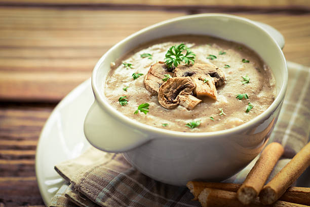

Mushroom Soup
This rich, creamy and delicious mushroom soup recipe is wonderfully satisfying to enjoy any time of the year.
It’s a hearty soup prepared in just one pot, and is perfect to make even on a busy weeknight in only 30 minutes.

Ingredients
- 200 to 250 grams button mushrooms or cremini mushrooms
- ⅓ cup finely chopped onions or 1 small to medium-sized onion
- ½ teaspoon finely chopped garlic or 2 to 3 small to medium-sized garlic
- 1 tejpatta (Indian bay leaf) or bay leaf
- 1 to 2 pinches ground nutmeg powder or grated nutmeg
- 1 cup water or vegetable stock
- 1 cup whole milk – at room temperature
- 6 tablespoons light cream or 3 tablespoons whipping cream or heavy cream
- 1 tablespoon whole wheat flour or all-purpose flour
- 2 tablespoons Butter
- 1 tablespoon chopped parsley or coriander leaves (cilantro) or any fresh soft herbs like basil
- freshly crushed black pepper as required
- salt as required
- 1 teaspoon finely chopped parsley – can also use the same herb you add in the soup for garnishing
like coriander leaves or basil
Instructions
Preparation :
- Heat 4 cups water along with ½ teaspoon salt till it comes to a boil.
- When the water comes to a boil, add the pasta.
Sautéing onions and garlic :
- Heat 2 tablespoons oil in a pan. Add the finely chopped spring onions or onions.
- Saute till the onions become translucent.
- Then add ginger-garlic paste. Saute till the raw aroma of ginger-garlic goes away.
- Then add 1 cup tightly packed finely chopped tomatoes.
Cooking Mushrooms :
- Add the sliced or chopped mushrooms and saute till the mushrooms start to release water.
- Saute till all the water dries up and the mushrooms become a light golden.
- Add the flour and saute for 3 to 4 minutes stirring often on a low to medium-low heat.
The raw aroma of flour should not be felt.
- Then add freshly crushed black pepper and mix well.
Making mushroom soup :
- Add water first followed by milk.
- Stir well and season with salt.
- On a low to medium-low heat let the soup come to a gentle simmer first.
- The mushroom soup would also begin to thicken. Stir at intervals.
- Further simmer for about 4 to 5 minutes till the soup thickens more.
- Then add the cream and chopped parsley.
- Simmer mushroom soup or 1 to 2 minutes more stirring often.
- Lastly, sprinkle ground nutmeg powder and stir.
- Switch off the heat and pour the soup in serving bowls.
- Serve the cream of mushroom soup steaming hot garnished with parsley or coriander.